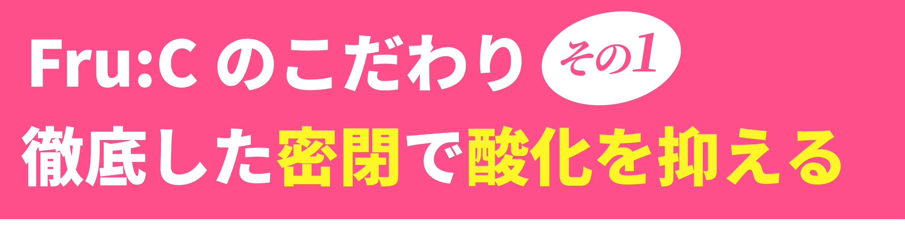
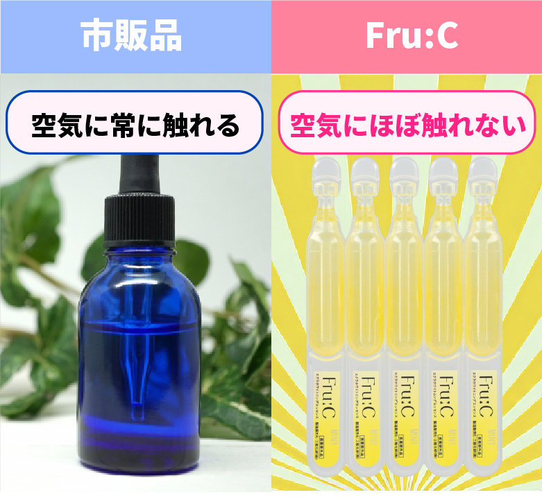
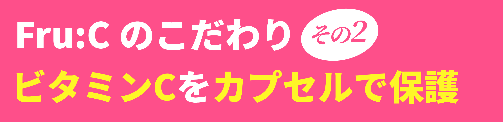
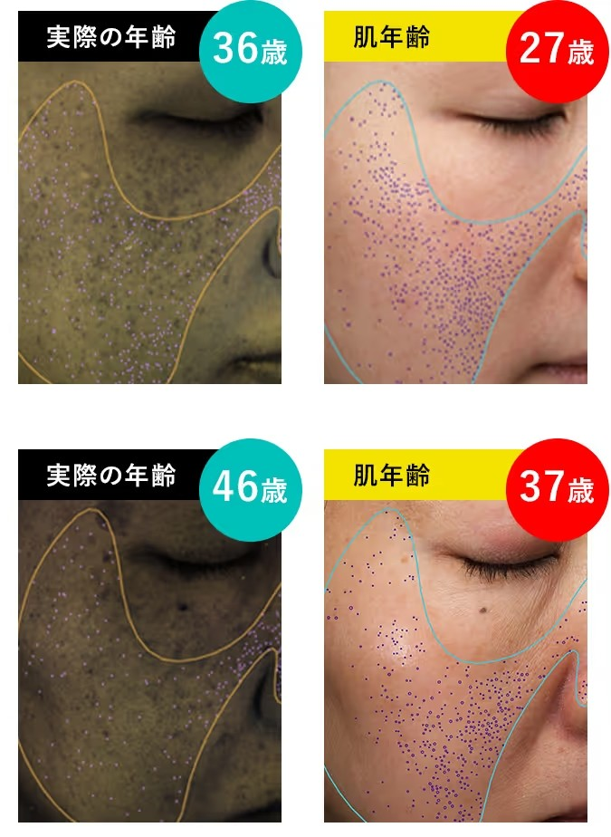

シミ抜き効果スゴすぎ...!
と国からも認定された
フルーシーですが
実験でもシミ抜き効果が
圧倒的だと証明されてて
使った人から美肌続出中なのですが
その効果の秘訣は
ビタミンCの劣化を
極限まで抑える方法
にあったんです！

フルーシーは
その製造過程で
製品の密封を徹底！
全部で5つの工程にに分けて
ビタミンCが空気に触れることを
徹底して防止
さらに
使いきりの個包装にしてるから
普通の化粧品ボトルよりも
開封時の空気の流入を
徹底して防止！

そもそも
空気に触れさせないことで
酸化を極限まで抑えてるんです

フルーシーは
通常は非常に壊れやすいビタミンCを
ヒアルロン酸のカプセルで覆って
空気から保護

肌に触れたタイミングで
初めてカプセルが破けるから
新鮮なビタミンCが
肌の奥まで浸透！
これらの工夫があるおかげで
ビタミンCの能力

をフルパワーで発揮！
シミの原因
隠れメラニンを
一網打尽に取り除く！
だから
市販品では実現できない
肌のホワイトニング効果MAX
肌年齢が10歳以上若返った
方がたくさん！

美容皮膚科医がおすすめするのも
納得できますね！
というわけで
実際に検証してみました！